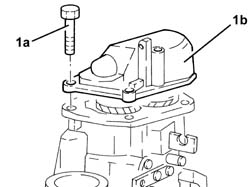
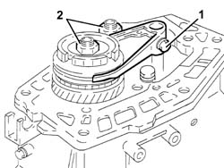
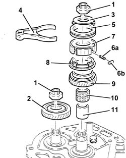

2010B42 5TH SPEED GEARS OF MANUAL GEARBOX WITH DIFFERENTIAL - R+R WITH GEARBOX REMOVED
- Path
- Procedures > 21 GEARBOX UNIT > 2110 MANUAL GEARBOX WITH DIFFERENTIAL > 2110B MANUAL GEARBOX WITH DIFFERENTIAL GEARS AND SYNCHRONISERS > 2010B42 5TH SPEED GEARS OF MANUAL GEARBOX WITH DIFFERENTIAL - R+R WITH GEARBOX REMOVED
- Kind
- repair procedure (removal / refitting; the operation number is the code)
- Applies to
- engines: 3.2 V6, 1.9 JTD 16V; all production periods
- Interactive page
- https://sloeber94.github.io/elrnDB-aGt/en/#/125001239
Applies to: engines: 3.2 V6, 1.9 JTD 16V; all production periods
 Removing
Removing
 Refitting
Refitting1. Undo the bolts (1a) and remove the rear cover (1b).

Applies to: engines: 3.2 V6, 1.9 JTD 16V; all production periods
Engage 5thspeed pressing the selector fork on the main shaft.
Engage any gear using the gear selector/engagement lever.
1. Undo the 5thspeed selector fork bolt.
2. Remove the staking and loosen the ring nuts for the main and layshafts.
Place the selector fork for 5thspeed in neutral.

Applies to: engines: 3.2 V6, 1.9 JTD 16V; all production periods
1. Completely undo the ring nuts for the main and layshafts.
2. Remove the 5thspeed driven gear.
3. Remove the roller and spring retaining flange for the 5thspeed synchronizer.
4. Remove the 5thspeed selector fork.
5. Remove the 5thspeed sliding sleeve.
6. Remove the springs (6a) and rollers (6b) for the 5thspeed hub.
7. Remove the hub for the 5thspeed sliding sleeve.
8. Remove the 5thspeed synchronizer ring.
9. Remove the 5thspeed drive gear.
10. Remove the needle bearing for the 5thspeed drive gear.
11. Remove the bush for the 5thspeed drive gear.

Applies to: engines: 3.2 V6, 1.9 JTD 16V; all production periods
Refitting
RemovingFit the 5thspeed drive gear bush.
Fit the needle bearing for the 5thspeed drive gear.
Fit the 5thspeed drive gear.
Fit the 5thspeed synchronizer gear.
Fit the 5thspeed sliding sleeve hub.
Fit the 5thspeed sliding sleeve.
Fit the srpings and rollers in the 5thspeed slding sleeve hub.
Fit the 5thspeed selector fork.
Fit the 5thspeed synchronizer springs and rollers retaining flange.
Fit the 5thspeed driven gear.
Tighten the new ring nuts for the main and layshafts to torque.
 | Fastening | Component | Ø | Value (daNm) |
|---|---|---|---|---|
- | Ring nut | GEAR SHAFTS | M20 | 10 - 12.4 |
Tighten the bolt for the 5thspeed selector fork to torque.
| Fastening | Component | Ø | Value (daNm) |
|---|---|---|---|---|
- | Bolt | 5thª speed selector fork | M6 | 1.5 - 1.9 |
Apply sealant to the contact surfaces between the main and layshaft rear bearing retaining plate and the rear cover.
 | Type | Component | Name | Qty. |
|---|---|---|---|---|
- | Sealant | GEARBOX SEALS/GASKETS | Loctite 573 | - |
Fit the rear cover and fix it tightening the bolts to torque.
| Fastening | Component | Ø | Value (daNm) |
|---|---|---|---|---|
- | Bolt | GEARBOX REAR COVER | M8 | 2.1 - 2.6 |